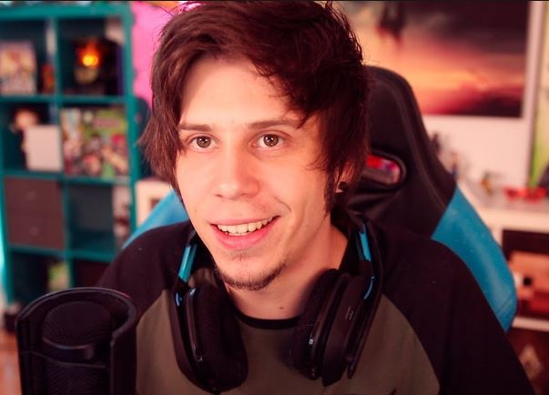

Recomendaciones mensuales de Twitch de nuestro equipo
En esta nueva entrega del mes de Febrero, los dejamos entrar a nuestro hogar con recomendaciones personales, algunas que consideramos joyas ocultas y no tan ocultas por parte de mi equipo y yo.
(Y estamos seguros que les va interesar! Estamos muy emocionados por esta nueva pagina especializada en Twitch, con este gran crecimiento de la plataforma asi mismo como estos Streamers)
A continuacion les dejamos nuestras joyitas del mes, que nos han dado horas de entretenimiento y al mismo tiempo no han hecho comprar algunos juegos (claro! tambien junto con algunas recomendaciones de algunos que les podrian agradar.
En la seccion Extras les dejamos algunos Bloopers!
La Rivers

Su nombre es Samantha Rivera, nació el 20 de agosto de 1998 en Monterrey y actualmente es considerada una de las mejores y más exitosas estrellas de twitch por su gran talento y su sentido del humor (nos ha sacado muchas risas :'D)
Rivers es reconocida por su apariencia única y distintiva. Ha ganado una gran cantidad de seguidores en diferentes plataformas y se ha convertido en una superestrella mundial
ElMariana

Su nombre real es Osvaldo Palacios y nacio el 02 de julio de 1998, es originario de Matamoros, Tamaulipas. Actualmente, ha logrado superar varios millones de suscriptores en su canal de YouTube.
A pesar de que su contenido se destina a los videojuegos, él ha mencionado que le gustaría variar lo que presenta, debido a la gran cantidad de espectadores que lo ven. A pesar de que cuenta con una fama sin precedentes, aún sigue contando con la misma forma de ser y carisma que lo caracterizó desde sus comienzos.
Rubius
Rubén Doblas nacido el 13 de febrero de 1990 con origen Noruego tiene más de 800 vídeos subidos, 9 mil millones de visualizaciones y 40 millones de suscriptores, es el mayor usuario de YouTube en España y estuvo entre los 50 canales con más suscriptores de la plataforma en el mundo durante 2013 y 2021.
En Twitch es el tercer usuario con más seguidores del mundo, con 11 millones.
En 2016 la revista Time lo incluyó en su lista de «líderes de la próxima generación» y lo nombró un «conquistador online».
En 2018 obtuvo el récord mundial de espectadores en vivo durante una transmisión en línea de YouTube, por un torneo presencial del videojuego Fortnite.